django-深入模型
Django是基于MVC架构的Web框架，MVC架构追求的是“模型”和“视图”的解耦合
所谓“模型”说得更直白一些就是数据，所以通常也被称作“数据模型”
在实际的项目中，数据模型通常通过数据库实现持久化操作，而关系型数据库在很长一段时间都是持久化的首选方案
以MySQL为例来说明如何使用关系型数据库来实现持久化操作
配置关系型数据库MySQL
- 修改项目的settings.py文件，首先将我们之前创建的应用hrs添加已安装的项目中，然后配置MySQL作为持久化方案。
(venv)$ cd oa/settings.py1
2
3
4
5
6
7
8
9
10
11
12
13
14
15
16
17
18
19
20
21
22
23
24# 此处省略上面的代码
INSTALLED_APPS = [
'django.contrib.admin',
'django.contrib.auth',
'django.contrib.contenttypes',
'django.contrib.sessions',
'django.contrib.messages',
'django.contrib.staticfiles',
'hrs',
]
DATABASES = {
'default': {
'ENGINE': 'django.db.backends.mysql',
'NAME': 'oa',
'HOST': 'localhost',
'PORT': 3306,
'USER': 'root',
'PASSWORD': '123456',
}
}
# 此处省略下面的代码
在配置ENGINE属性时，常用的可选值包括：
- ‘django.db.backends.sqlite3’
- ‘django.db.backends.postgresql’
- ‘django.db.backends.mysql’
- ‘django.db.backends.oracle’
NAME属性代表数据库的名称，如果使用SQLite它对应着一个文件，在这种情况下NAME的属性值应该是一个绝对路径；使用其他关系型数据库，则要配置对应的HOST（主机）、PORT（端口）、USER（用户名）、PASSWORD（口令）等属性。
- 安装MySQL客户端工具，Python 3中使用PyMySQL，Python 2中用MySQLdb。
(venv)$ pip install pymysql
如果使用Python 3需要修改项目的init.py文件并加入如下所示的代码，这段代码的作用是将PyMySQL视为MySQLdb来使用，从而避免Django找不到连接MySQL的客户端工具而询问你：“Did you install mysqlclient? ”（你安装了mysqlclient吗？）。1
2
3import pymysql
pymysql.install_as_MySQLdb()
- 运行manage.py并指定migrate参数实现数据库迁移，为应用程序创建对应的数据表，当然在此之前需要先启动MySQL数据库服务器并创建名为oa的数据库，在MySQL中创建数据库的语句如下所示。
1
2drop database if exists oa;
create database oa default charset utf8;
mysql和sqlite数据库不同，sqlite是生成了文件在当前目录，而mysql是都存放在安装目录的Data文件里面
1 | (venv)$ python manage.py migrate |
会出现的问题：
- pymysql的版本太低，然后报错：
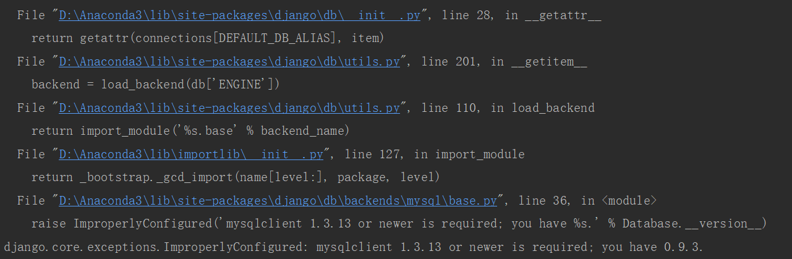
解决办法就是到那个对应的py文件里面，把一个if 版本太低 <= 1.3. 然后的操作语句注释掉
- python2和python3 的区别，decode和encode搞不清
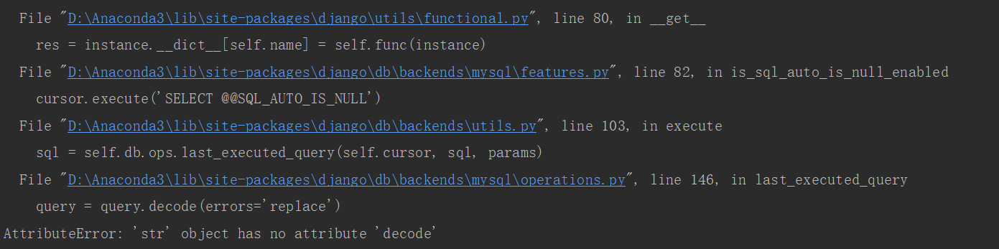
解决办法是到那个对应的py文件夹，找到那个decode，然后换成encode
- 可以看到，Django帮助我们创建了10张表，这些都是使用Django框架需要的东西，稍后我们就会用到这些表。除此之外，我们还应该为我们自己的应用创建数据模型。如果要在hrs应用中实现对部门和员工的管理，我们可以创建如下所示的数据模型。
django给我们创建的10张表：
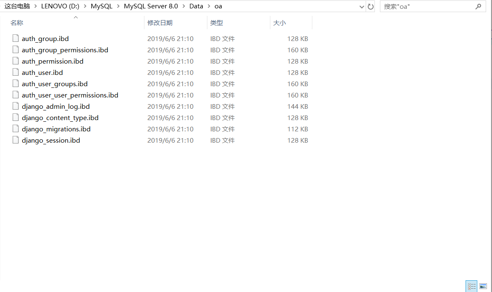
1 | from django.db import models |
说明：上面定义模型时使用了字段类及其属性，其中IntegerField对应数据库中的integer类型，CharField对应数据库的varchar类型，DecimalField对应数据库的decimal类型，ForeignKey用来建立多对一外键关联。字段属性primary_key用于设置主键，max_length用来设置字段的最大长度，db_column用来设置数据库中与字段对应的列，verbose_name则设置了Django后台管理系统中该字段显示的名称。
更多详细资料：谷歌百度：模型定义参考-字段-字段属性-模型元数据选项-查询参考
db_table是用于指定自定义数据库表名的
- 通过模型创建数据表。
1 | (venv)$ python manage.py makemigrations hrs |
执行完数据模型迁移操作之后，可以在通过图形化的MySQL客户端工具查看到E-R图（实体关系图）。
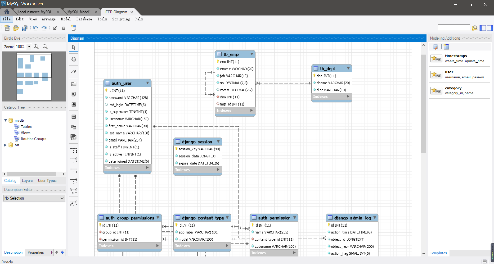
具体操作百度
在后台管理模型
创建超级管理员账号。1
2
3
4
5
6(venv)$ python manage.py createsuperuser
Username (leave blank to use 'hao'): zzm99
Email address: zzm99@126.com
Password:
Password (again):
Superuser created successfully.
启动Web服务器，登录后台管理系统。1
2
3(venv)$ python manage.py runserver
访问http://127.0.0.1:8000/admin，会来到如下图所示的登录界面。
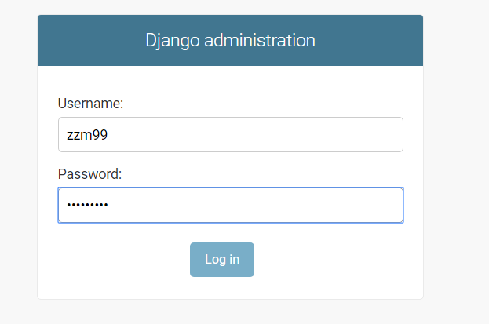
登录后进入管理员操作平台。
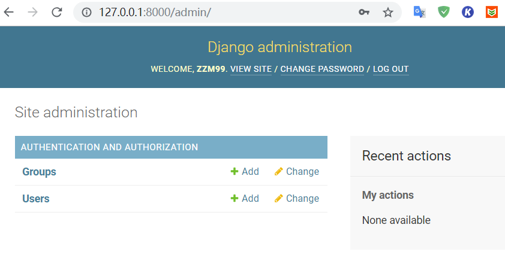
至此我们还没有看到之前创建的模型类，需要在应用的admin.py文件中模型进行注册。
注册模型类。1
(venv)$ vim hrs/admin.py
1 | from django.contrib import admin |
注册模型类后，就可以在后台管理系统中看到它们。
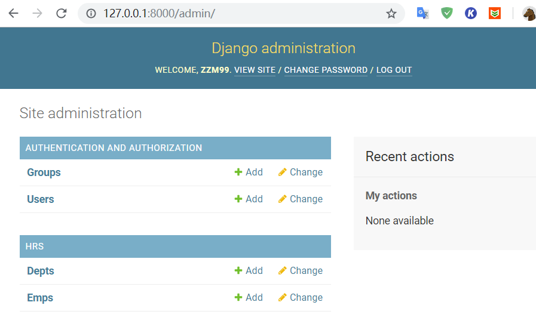
对模型进行CRUD操作。
可以在管理员平台对模型进行C（新增create）R（查看retrieve）U（更新update）D（删除delete）操作，如下图所示。
添加新的部门。
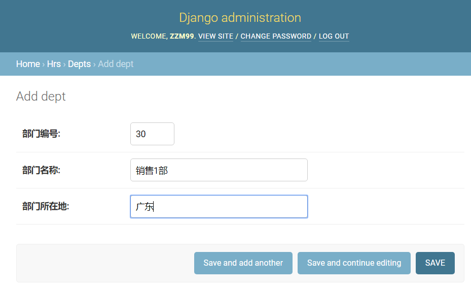
查看所有部门。
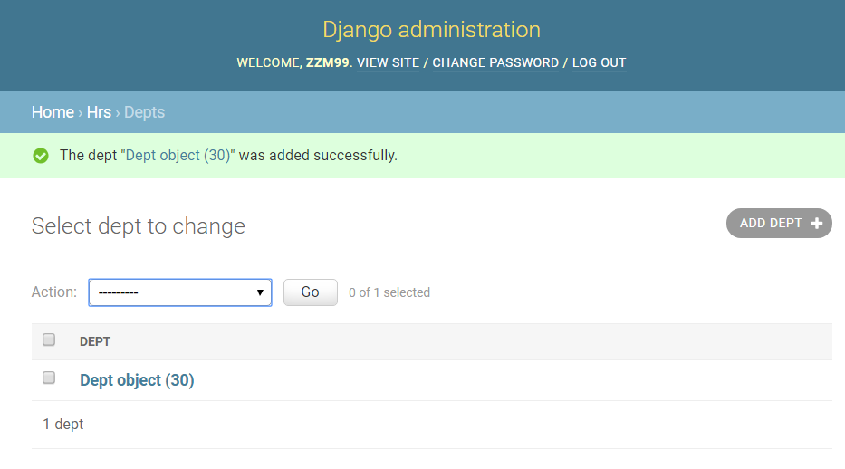
更新和删除部门。
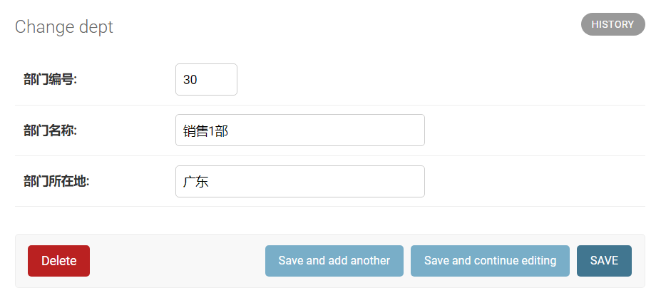
注册模型管理类。
再次修改admin.py文件，通过注册模型管理类，可以在后台管理系统中更好的管理模型。
1 | from django.contrib import admin |
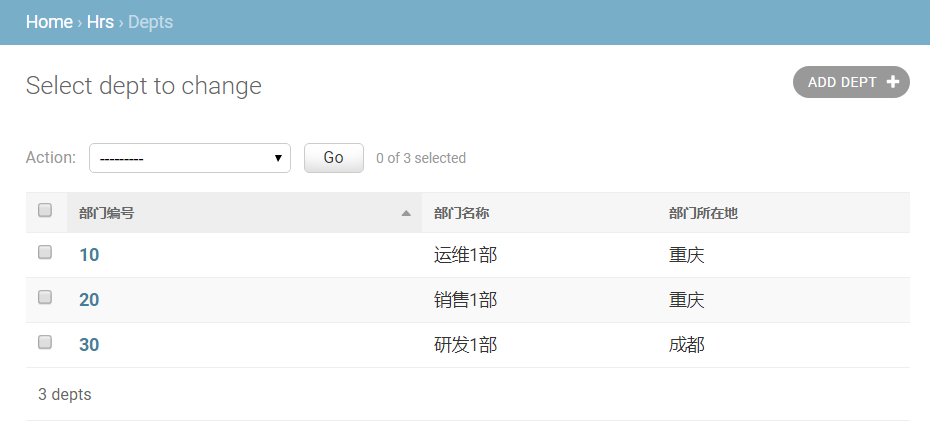
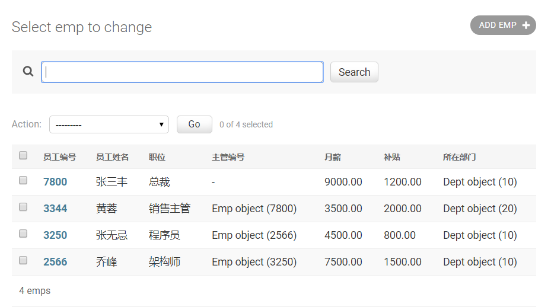
为了更好的查看模型数据，可以为Dept和Emp两个模型类添加str魔法方法。
1 | #models.py |
修改代码后刷新查看Emp模型的页面，效果如下图所示。
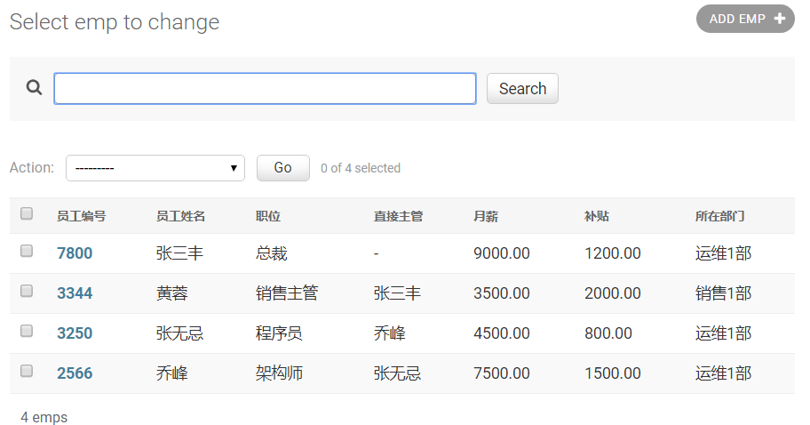
使用ORM完成模型的CRUD操作
对象关系映射（英语：(Object Relational Mapping，简称ORM，或O/RM，或O/R mapping），是一种程序技术，用于实现面向对象编程语言里不同类型系统的数据之间的转换 。 从效果上说，它其实是创建了一个可在编程语言里使用的–“虚拟对象数据库”。
在了解了Django提供的模型管理平台之后，我们来看看如何从代码层面完成对模型的CRUD（Create / Read / Update / Delete）操作。我们可以通过manage.py开启Shell交互式环境，然后使用Django内置的ORM框架对模型进行CRUD操作。
1 | (venv)$ python manage.py shell |
新增
1 | from hrs.models import Dept, Emp |
更新
1 | dept.name = '研发3部' |
查询
1 | >>> Dept.objects.all() |
过滤数据。
1 | >>> Dept.objects.filter(name='研发3部') # 查询部门名称为“研发3部”的部门 |
查询单个对象
1 | >>> Dept.objects.get(no=10) |
排序数据
1 | >>> Dept.objects.order_by('no') # 查询所有部门按部门编号升序排列 |
切片数据
1 | >>> Dept.objects.order_by('no')[0:2] # 按部门编号排序查询1~2部门 |
高级查询。
1 | >>> Emp.objects.filter(dept__no=10) # 根据部门编号查询该部门的员工 |
Q对象（用于执行复杂查询）的使用：1
2
3
4
5
6>>> from django.db.models import Q
>>> Emp.objects.filter(
... Q(name__startswith='张'),
... Q(sal__gte=5000) | Q(comm__gte=1000)
... ) # 查询名字以“张”开头且工资大于等于5000或补贴大于等于1000的员工
<QuerySet [<Emp: 张三丰>]>
说明1：由于员工与部门之间存在多对一外键关联，所以也能通过部门反向查询该部门的员工（从一对多关系中“一”的一方查询“多”的一方），反向查询属性默认的名字是类名小写_set（如上面例子中的emp_set），当然也可以在创建模型时通过ForeingKey的related_name属性指定反向查询属性的名字。如果不希望执行反向查询可以将related_name属性设置为’+’或以’+’开头的字符串。
说明2：查询多个对象的时候返回的是QuerySet对象，QuerySet使用了惰性查询，即在创建QuerySet对象的过程中不涉及任何数据库活动，等真正用到对象时（求值QuerySet）才向数据库发送SQL语句并获取对应的结果，这一点在实际开发中需要引起注意！
说明3：可以在QuerySet上使用update()方法一次更新多个对象。
删除
1 | >>> Dept.objects.get(no=40).delete() |
Django模型最佳实践
- 正确的为模型和关系字段命名。
- 设置适当的related_name属性。
- 用OneToOneField代替ForeignKeyField(unique=True)。
- 通过“迁移操作”（migrate）来添加模型。
- 用NoSQL来应对需要降低范式级别的场景。
- 如果布尔类型可以为空要使用NullBooleanField。
- 在模型中放置业务逻辑。
- 用
.DoesNotExists取代ObjectDoesNotExists。 - 在数据库中不要出现无效数据。
- 不要对QuerySet调用len()函数。
- 将QuerySet的exists()方法的返回值用于if条件。
- 用DecimalField来存储货币相关数据而不是FloatField。
- 定义str方法。
- 不要将数据文件放在同一个目录中。